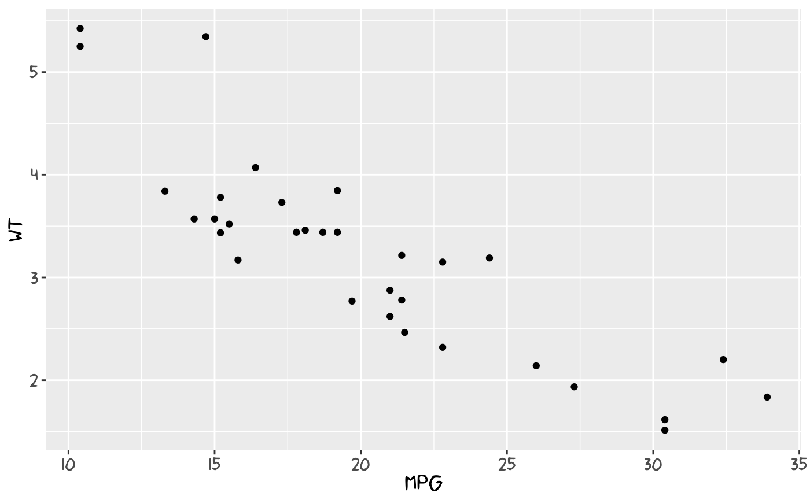
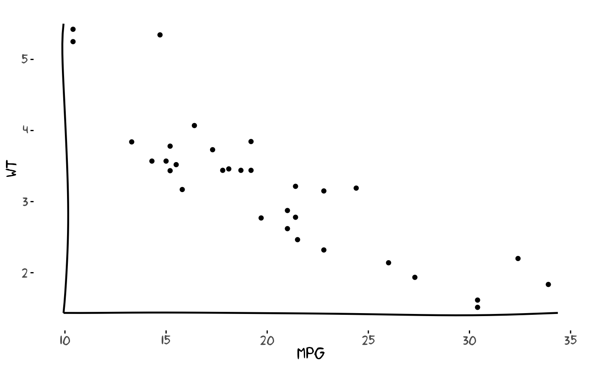
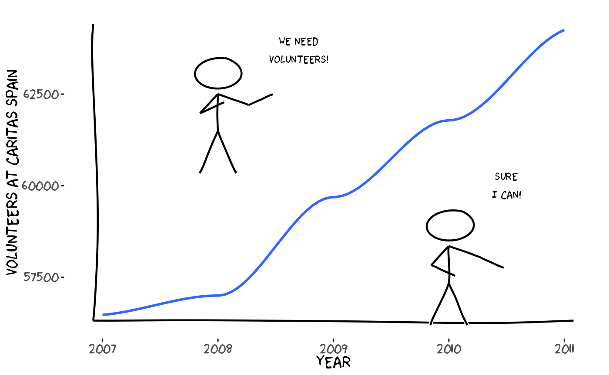
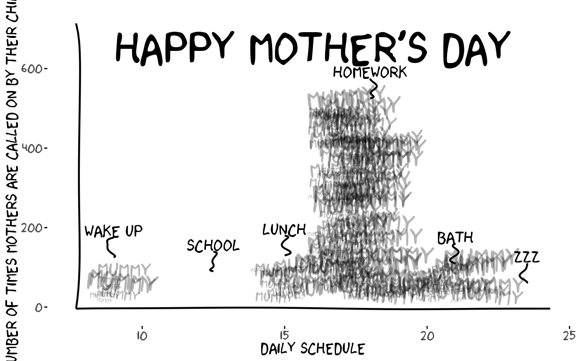
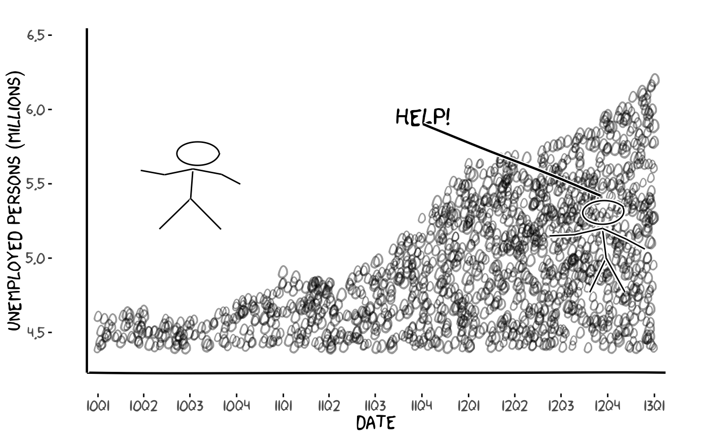
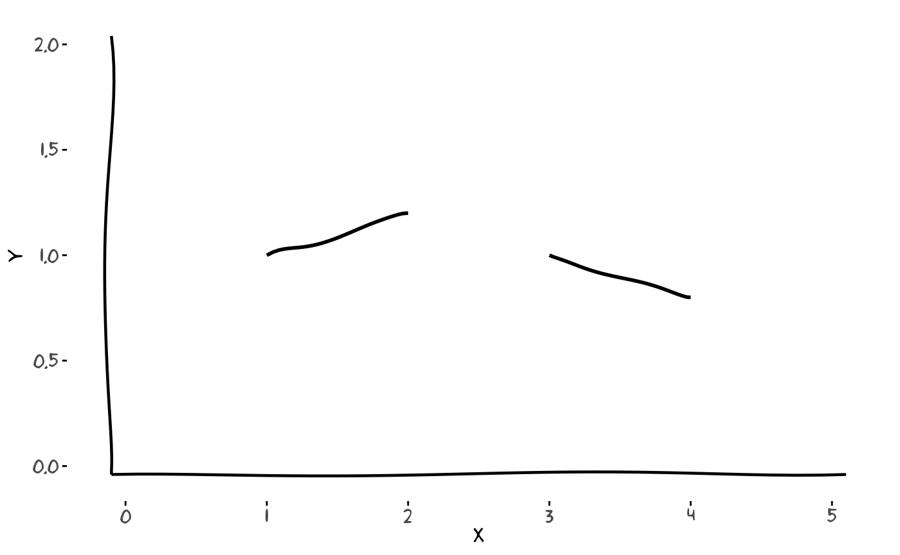
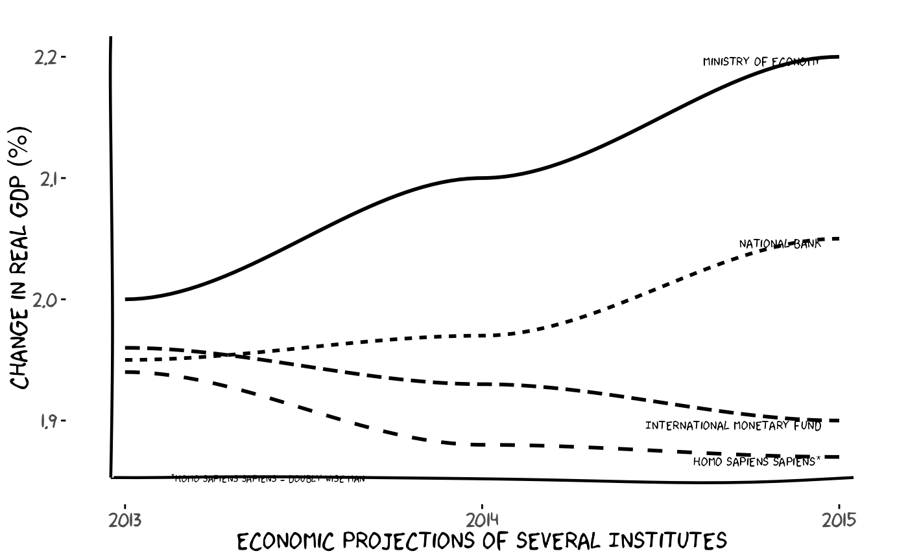
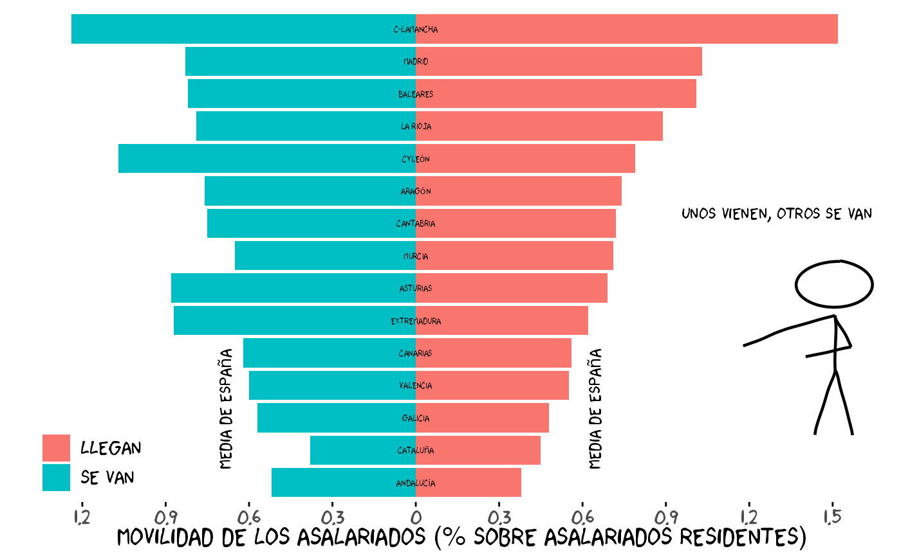
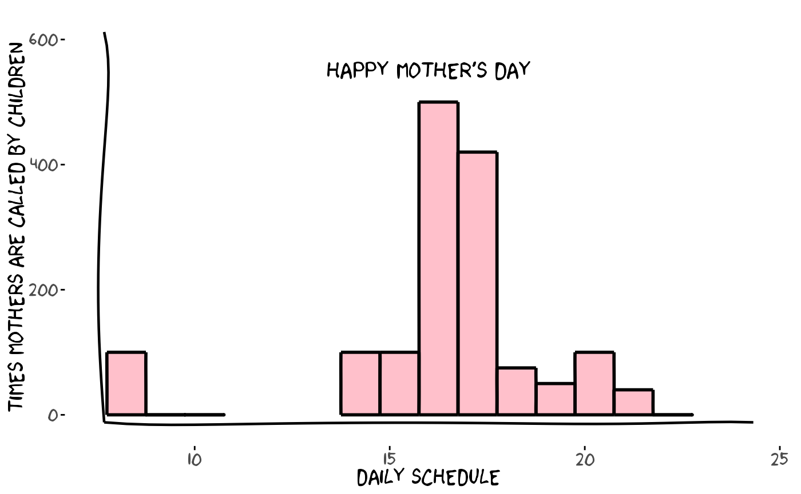

xkcd: An R Package for Plotting XKCD Graphs
ToledoEM
2025-11-21
Source:vignettes/xkcd-intro.Rmd
xkcd-intro.RmdIntroduction and Main Motivation
Original from author: “Emilio Torres-Manzanera” pulled from https://github.com/cran/xkcd/*
The XKCD web site is a web comic created by Randall Munroe, who described it as a web comic of romance, sarcasm, math, and language. He uses stick figures, very simple drawings composed of a few lines and curves, in his comics strips, that are available under the Creative Commons Attribution-NonCommercial 2.5 License.
Due to the popularity of Randall Munroe’s work, several questions about how to draw XKCD style graphs using different programming languages were posted in Stack Overflow. Many authors tried to replicate such style using different programming languages. For instance, there are implementations in Mathematica and Matlab using image processing distortion; a Python library focused on this style; and proposals in LaTeX.
The R language, despite being a software environment for statistical computing and graphics, lacked a specific package devoted to plot graphs in an XKCD style. To the best of our knowledge, there was not a satisfactory response to the question “How can we make xkcd style graphs in R?” published in Stack Overflow.
Fortunately, R is rich with facilities for creating and developing interesting graphics. In particular, the implementation of the grammar of graphics in R by ggplot2 allows the design of XKCD style graphs. The package xkcd presented in this paper develops several functions to plot statistical graphs in a freehand sketch style following the guidelines of the XKCD web site.
In this paper, an introduction to plot such graphs in R is detailed. The following section deals with installing xkcd fonts and saving graphs, a step that raised several questions among users. In the next section, some basic examples are explained, and the graph gallery section shows several complex plots. Finally, the article ends with a discussion concerning statistical information and creative drawing.
The XKCD Fonts
The package xkcd uses the XKCD fonts, so you must install them on your computer. An easy way to check whether these fonts are installed on the computer or not is typing the following code and comparing the results:
# Download xkcd font to a temporary location (do not ship the font with the package)
library(extrafont)
tryCatch({
temp_font <- file.path(tempdir(), "xkcd.ttf")
download.file("https://toledoem.github.io/img/xkcd.ttf",
destfile = temp_font, mode = "wb", timeout = 60)
}, error = function(e) {
warning("Failed to download xkcd font. See https://github.com/ipython/xkcd-font")
})
# If downloaded, copy into the user's fonts directory for registration (not packaged)
fonts_dir <- path.expand("~/.fonts")
if (!dir.exists(fonts_dir)) dir.create(fonts_dir, recursive = TRUE)
if (exists("temp_font") && file.exists(temp_font)) {
file.copy(temp_font, file.path(fonts_dir, "xkcd.ttf"), overwrite = TRUE)
}
# Register fonts (import only when needed)
font_import(pattern = "[X/x]kcd", prompt = FALSE)
fonts()
fonttable()
if (.Platform$OS.type != "unix") {
loadfonts(device = "win")
} else {
loadfonts()
}
# Small font-check plot: uses installed xkcd font if available
library(extrafont)
library(ggplot2)
if ('xkcd' %in% extrafont::fonts()) {
p <- ggplot() + geom_point(aes(x = mpg, y = wt), data = mtcars) +
theme(text = element_text(size = 16, family = "xkcd"))
} else {
warning("Not xkcd fonts installed!")
p <- ggplot() + geom_point(aes(x = mpg, y = wt), data = mtcars)
}
p
# # Save initial font-check plot for README (if possible)
# try({
# ggsave(filename = file.path("vignettes", "font_check.png"), plot = p, width = 6, height = 4)
# }, silent = TRUE)If you want to modify these fonts, you may use the spline font database file format (sfd), the official xkcd font created by the IPython project and distributed under a Creative Commons Attribution-NonCommercial 3.0 License, which can be opened with FontForge, an open-source font editor.
Saving the Graphs
ggsave() is the preferred function for saving a ggplot2
plot. For instance, the following instruction saves the graph as a
bitmap file:
ggsave("gr1.png", p)If you want to save this chart as PDF you should embed the fonts into
the PDF file, using embed_fonts(). First, if you are
running Windows, you may need to tell it where the Ghostscript program
is, for embedding fonts.
ggsave("gr1.pdf", plot = p, width = 12, height = 4)
if (.Platform$OS.type != "unix") {
## Needed for Windows. Make sure you have the correct path
Sys.setenv(R_GSCMD =
"C:\\Program Files (x86)\\gs\\gs9.06\\bin\\gswin32c.exe")
}
embed_fonts("gr1.pdf")See the development site of extrafont for additional instructions and examples of using fonts other than the standard PostScript fonts.
Installing xkcd
The package xkcd is available on CRAN. From within R, you can install it with the following instruction:
install.packages("xkcd", dependencies = TRUE)Once the package has been installed, it can be loaded by typing:
Automatically, it loads the packages ggplot2 and extrafont. The most
relevant functions are xkcdaxis(), that plots axis in a
handwritten style, xkcdman(), that draws stick figures, and
xkcdrect(), that creates fuzzy rectangles. These functions
are compatible with the grammar of graphics proposed by ggplot2.
From a technical point of view, lines plotted with the xkcd package
are jittered with white noise and then smoothed using Bezier curves with
the bezier() function from Hmisc.
Axis, Stick Figures, and Facets
In order to get a handmade drawing of the axis and an XKCD theme, a
specific function based on the ggplot2 framework was created,
xkcdaxis():
xrange <- range(mtcars$mpg)
yrange <- range(mtcars$wt)
set.seed(123)
p <- ggplot() + geom_point(aes(mpg, wt), data = mtcars) +
xkcdaxis(xrange, yrange)
p
Due to the fact that white random noise is used in the picture, it is
convenient to fix a seed for reproducing the same figure
(set.seed()).
Maybe the most flashy function is xkcdman(), that draws
a stick figure with different positions, angles, and lengths:
ightleg, angleleftleg = angleleftleg, angleofneck = angleofneck)
set.seed(123)
p <- ggplot() + geom_point(aes(x = mpg, y = wt, colour = as.character(vs)), data = mtcars) +
xkcdaxis(xrange, yrange) +
xkcdman(mapping, dataman)
pAdditionally, you may use the facet option of ggplot2 to split up your data by one or more variables and plot the subsets of data together.
p + facet_grid( ~ vs)Some Basic Examples
In this section, the code to plot a line graph and a bar chart is detailed. Remember to set the seed if you want to replicate your own figures.
Line chart with stick figures
volunteers <- data.frame(year = c(2007:2011),
number = c(56470, 56998, 59686, 61783, 64251))
xrange <- range(volunteers$year)
yrange <- range(volunteers$number)
ratioxy <- diff(xrange) / diff(yrange)
dataman <- data.frame(x = c(2008, 2010),
y = c(63000, 58850),
scale = 1000,
ratioxy = ratioxy,
angleofspine = -pi / 2,
anglerighthumerus = c(-pi / 6, -pi / 6),
anglelefthumerus = c(-pi / 2 - pi / 6, -pi / 2 - pi / 6),
anglerightradius = c(pi / 5, -pi / 5),
angleleftradius = c(pi / 5, -pi / 5),
anglerightleg = 3 * pi / 2 - pi / 12,
angleleftleg = 3 * pi / 2 + pi / 12,
angleofneck = -pi / 2)
mapping <- aes(x = x, y = y, scale = scale, ratioxy = ratioxy,
angleofspine = angleofspine,
anglerighthumerus = anglerighthumerus,
anglelefthumerus = anglelefthumerus,
anglerightradius = anglerightradius,
angleleftradius = angleleftradius,
anglerightleg = anglerightleg,
angleleftleg = angleleftleg,
angleofneck = angleofneck)
set.seed(123)
p <- ggplot() +
geom_smooth(mapping = aes(x = year, y = number),
data = volunteers, method = "loess", se = FALSE) +
xkcdaxis(xrange, yrange) +
ylab("Volunteers at Caritas Spain") +
xkcdman(mapping, dataman) +
annotate("text", x = 2008.7, y = 63700,
label = "We Need\nVolunteers!", family = "xkcd") +
annotate("text", x = 2010.5, y = 60000,
label = "Sure\nI can!", family = "xkcd")
p
# Save a representative plot for README
try({
ggsave(filename = file.path("caritas_plot.png"), plot = p, width = 9, height = 5)
}, silent = TRUE)One interesting property of these charts is that when xkcd lines intersect, there is a space in blank in the crossing, following XKCD style.
Mommy jittered-text example
# Adapted from a legacy example: draw jittered 'Mummy' labels inside
# time-of-day boxes, add small xkcd-style ticks and save the figure as a PNG
mommy <- read.table(sep=" ",text ="
8 100
9 0
10 0
11 0
12 0
13 0
14 100
15 100
16 500
17 420
18 75
19 50
20 100
21 40
22 0
")
names(mommy) <- c("hour","number")
data <- mommy
data$xmin <- data$hour - 0.25
data$xmax <- data$xmin + 1
data$ymin <- 0
data$ymax <- data$number
xrange <- range(8, 24)
yrange <- range(min(data$ymin) + 10 , max(data$ymax) + 200)
ratioxy <- diff(xrange)/diff(yrange)
timelabel <- function(text,x,y) {
te1 <- annotate("text", x=x, y = y + 65, label=text, size = 6,family ="xkcd")
list(te1,
geom_xkcdpath(mapping = aes(x = xbegin, y = ybegin, xend = xend, yend = yend),
data = data.frame(xbegin = x, ybegin = y + 50, xend = x, yend = y),
xjitteramount = 0.5, linewidth = 0.8, mask = FALSE))
}
n <- 1800
set.seed(123)
x <- runif(n, xrange[1],xrange[2] )
y <- runif(n, yrange[1],yrange[2] )
inside <- unlist(lapply(1:n, function(i) any(data$xmin <= x[i] & x[i] < data$xmax &
data$ymin <= y[i] & y[i] < data$ymax)))
x <- x[inside]
y <- y[inside]
nman <- length(x)
sizer <- round(runif(nman, 1, 10),0)
angler <- runif(nman, -10,10)
p <- ggplot() +
geom_text(aes(x,y,label="Mummy",angle=angler,hjust=0, vjust=0),
family="xkcd",size=sizer,alpha=0.3) +
xkcdaxis(xrange,yrange) +
annotate("text", x=16, y = 650,
label="Happy Mother's day", size = 16,family ="xkcd") +
xlab("daily schedule") +
ylab("Number of times mothers are called on by their children") +
timelabel("Wake up", 9, 125) + timelabel("School", 12.5, 90) +
timelabel("Lunch", 15, 130) +
timelabel("Homework", 18, 525) +
timelabel("Bath", 21, 110) +
timelabel("zzz", 23.5, 60)
print(p)
# Save a PNG into the vignette folder so it can be used in the README
out_png <- file.path("mommy_plot.png")
ggsave(filename = out_png, plot = p, width = 9, height = 6)You may specify the width, the height, and colors of the bars.
Graph Gallery
This gallery provides a variety of complex charts designed to address different visualization needs.
Unemployment with Text Fill
library(zoo)
library(splancs)
mydatar <- read.table(text="
6.202
5.965
5.778
5.693
5.639
5.273
4.978
4.833
4.910
4.696
4.574
4.645
4.612
")
mydata1 <- mydatar[dim(mydatar)[1]:1,]
z <- zooreg(mydata1, end = as.yearqtr("2013-1"), frequency = 4)
mydata <- data.frame(parados = z)
mydata$year <- as.numeric(as.Date(as.yearqtr(rownames(mydata))))
mydata$label <- paste(substr(rownames(mydata), 3, 4), substr(rownames(mydata), 6, 7), sep = "")
xrange <- range(mydata$year)
yrange <- range(mydata$parados) + c(-0.3, 0.3)
ratioxy <- diff(xrange) / diff(yrange)
set.seed(123)
n <- 3200
poligono <- mydata[, c("year", "parados")]
names(poligono) <- c("x", "y")
poligono <- rbind(poligono, c(max(poligono$x), 4.4))
poligono <- rbind(poligono, c(min(poligono$x), 4.4))
points <- data.frame(x = runif(n, range(poligono$x)[1], range(poligono$x)[2]),
y = runif(n, range(poligono$y)[1], range(poligono$y)[2]))
kk <- inout(points, poligono)
points <- points[kk, ]
points <- rbind(points, poligono)
x <- points$x
y <- points$y
nman <- length(x)
sizer <- runif(nman, 4, 6)
n <- 2
dataman <- data.frame(
x = c(15600, 14800),
y = c(5.3, 5.7),
scale = 0.2,
ratioxy = ratioxy,
angleofspine = runif(n, -pi / 2 - pi / 10, -pi / 2 + pi / 10),
anglerighthumerus = runif(n, -pi / 6 - pi / 10, -pi / 6 + pi / 10),
anglelefthumerus = runif(n, pi + pi / 6 - pi / 10, pi + pi / 6 + pi / 10),
anglerightradius = runif(n, -pi / 4, pi / 4),
angleleftradius = runif(n, pi - pi / 4, pi + pi / 4),
anglerightleg = runif(n, 3 * pi / 2 + pi / 12, 3 * pi / 2 + pi / 12 + pi / 10),
angleleftleg = runif(n, 3 * pi / 2 - pi / 12 - pi / 10, 3 * pi / 2 - pi / 12),
angleofneck = runif(n, -pi / 2 - pi / 10, -pi / 2 + pi / 10)
)
mapping <- aes(x = x, y = y, scale = scale, ratioxy = ratioxy,
angleofspine = angleofspine,
anglerighthumerus = anglerighthumerus,
anglelefthumerus = anglelefthumerus,
anglerightradius = anglerightradius,
angleleftradius = angleleftradius,
anglerightleg = anglerightleg,
angleleftleg = angleleftleg,
angleofneck = angleofneck)
set.seed(123)
p1 <- ggplot() +
geom_text(aes(x = x, y = y, label = "0"),
data = data.frame(x = x, y = y), family = "xkcd", alpha = 0.4, size = sizer) +
xkcdaxis(xrange, yrange) +
ylab("Unemployed persons (millions)") +
xlab("Date") +
annotate("text", x = 15250, y = 5.95, label = "Help!", family = "xkcd", size = 7) +
geom_xkcdpath(mapping = aes(x = xbegin, y = ybegin, xend = xend, yend = yend, group = 1),
data = data.frame(xbegin = 15600, ybegin = 5.42, xend = 15250, yend = 5.902, group = 1),
xjitteramount = 200) +
theme(legend.position = "none")
p2 <- p1 + scale_x_continuous(breaks = as.numeric(mydata$year), label = mydata$label)
p2 + xkcdman(mapping, dataman)
# Grouping example: provide a group aesthetic to geom_xkcdpath() when
df <- data.frame(x = c(1, 3), y = c(1, 1), xend = c(2, 4), yend = c(1.2, 0.8), group = 1)
ggplot() +
geom_xkcdpath(aes(x = x, y = y, xend = xend, yend = yend, group = group),
data = df, linewidth = 1, xjitteramount = 0.05, yjitteramount = 0.05) +
xkcdaxis(c(0,5), c(0,2)) + theme_xkcd()
Economic Projections
library(reshape)
mydata <- data.frame(
year = c(2013, 2014, 2015),
ministerio = c(2, 2.1, 2.2),
banco = c(1.95, 1.97, 2.05),
fmi = c(1.96, 1.93, 1.90),
homo = c(1.94, 1.88, 1.87)
)
mydatalong <- melt(mydata, id = "year",
measure.vars = c("ministerio", "banco", "fmi", "homo"))
xrange <- c(2013, 2015)
yrange <- c(1.86, 2.21)
set.seed(123)
p <- ggplot() +
geom_smooth(aes(x = year, y = value, group = variable, linetype = variable),
data = mydatalong, color = "black", se = FALSE) +
theme(legend.position = "none") +
xkcdaxis(xrange, yrange) +
ylab("Change in real GDP (%)") +
xlab("Economic Projections of several Institutes") +
scale_x_continuous(breaks = c(2013, 2014, 2015), labels = c(2013, 2014, 2015))
datalabel <- data.frame(
x = 2014.95,
y = c(mydata[mydata$year == 2015, "ministerio"],
mydata[mydata$year == 2015, "banco"],
mydata[mydata$year == 2015, "fmi"],
mydata[mydata$year == 2015, "homo"]),
label = c("Ministry of Economy", "National Bank",
"International Monetary Fund", "Homo Sapiens Sapiens*")
)
p2 <- p +
geom_text(aes(x = x, y = y, label = label),
data = datalabel, hjust = 1, vjust = 1, family = "xkcd", size = 3) +
annotate("text", x = 2013.4, y = 1.852,
label = "*Homo Sapiens Sapiens = Doubly Wise Man",
family = "xkcd", size = 2.5)
p2
Regional Migration Pyramid
set.seed(130613)
resumen <- structure(list(
tonombre = structure(c(1L, 2L, 3L, 11L, 4L, 5L, 8L, 6L, 7L, 9L, 10L, 14L, 12L, 13L, 15L),
.Label = c("Andalucía", "Aragón", "Asturias", "Canarias", "Cantabria",
"C-LaMancha", "CyLeón", "Cataluña", "Extremadura", "Galicia",
"Baleares", "Madrid", "Murcia", "La Rioja", "Valencia"),
class = "factor"),
persons = c(2743706L, 515772L, 364410L, 399963L, 699410L, 212737L, 2847377L, 717874L, 894946L, 371502L, 942277L, 119341L, 2561918L, 493833L, 1661613L),
frompersons = c(14266L, 3910L, 3214L, 3283L, 4371L, 1593L, 10912L, 8931L, 9566L, 3231L, 5407L, 940L, 21289L, 3202L, 9939L),
topersons = c(10341L, 3805L, 2523L, 4039L, 3911L, 1524L, 12826L, 10897L, 7108L, 2312L, 4522L, 1066L, 26464L, 3529L, 9187L),
llegan = c(0.38, 0.74, 0.69, 1.01, 0.56, 0.72, 0.45, 1.52, 0.79, 0.62, 0.48, 0.89, 1.03, 0.71, 0.55),
sevan = c(0.52, 0.76, 0.88, 0.82, 0.62, 0.75, 0.38, 1.24, 1.07, 0.87, 0.57, 0.79, 0.83, 0.65, 0.60)
), class = "data.frame", row.names = c(NA, -15L))
library(reshape)
resumenlargo <- melt(resumen[, c("tonombre", "llegan", "sevan")])
oo <- order(resumen$llegan)
nombreordenados <- resumen$tonombre[oo]
resumenlargo$tonombre <- factor(resumenlargo$tonombre, levels = nombreordenados, ordered = TRUE)
xrange <- c(1, 15)
yrange <- c(-1.3, 1.6)
ratioxy <- diff(xrange) / diff(yrange)
kk <- ggplot() +
geom_bar(aes(y = value, x = tonombre, fill = variable),
data = resumenlargo[resumenlargo$variable == "llegan", ], stat = "identity") +
geom_bar(aes(y = (-1) * value, x = tonombre, fill = variable),
data = resumenlargo[resumenlargo$variable == "sevan", ], stat = "identity") +
scale_y_continuous(breaks = seq(-1.2, 1.5, 0.3), labels = abs(seq(-1.2, 1.5, 0.3))) +
ylab("Movilidad de los asalariados (% sobre asalariados residentes)") +
coord_flip() +
theme_xkcd() +
xlab("") +
theme(axis.ticks.y = element_blank(), axis.text.y = element_blank())
kk2 <- kk +
geom_text(aes(x = tonombre, y = 0, label = tonombre),
data = resumenlargo[resumenlargo$variable == "llegan", ], family = "xkcd", size = 2)
lleganespana <- sum(resumen$topersons) * 100 / sum(resumen$persons)
sevanespana <- sum(resumen$frompersons) * 100 / sum(resumen$persons)
kk3 <- kk2 +
scale_fill_discrete(name = "",
breaks = c("llegan", "sevan"),
labels = c("Llegan", "Se van")) +
theme(legend.justification = c(0, 0), legend.position = c(0, 0))
dataman <- data.frame(
x = 7,
y = 1.5,
scale = 0.35,
ratioxy = ratioxy,
angleofspine = runif(1, -pi / 2 - pi / 2 - pi / 10, -pi / 2 - pi / 2 + pi / 10),
anglerighthumerus = runif(1, -pi / 2 - pi / 6 - pi / 10, -pi / 2 - pi / 6 + pi / 10),
anglelefthumerus = runif(1, -pi / 2 - pi / 2 - pi / 10, -pi / 2 - pi / 2 + pi / 10),
anglerightradius = runif(1, -pi / 2 - pi / 5 - pi / 10, -pi / 2 - pi / 5 + pi / 10),
angleleftradius = runif(1, -pi / 2 - pi / 5 - pi / 10, -pi / 2 - pi / 5 + pi / 10),
angleleftleg = runif(1, -pi / 2 + 3 * pi / 2 + pi / 12 - pi / 20, -pi / 2 + 3 * pi / 2 + pi / 12 + pi / 20),
anglerightleg = runif(1, -pi / 2 + 3 * pi / 2 - pi / 12 - pi / 20, -pi / 2 + 3 * pi / 2 - pi / 12 + pi / 20),
angleofneck = runif(1, -pi / 2 + 3 * pi / 2 - pi / 10, -pi / 2 + 3 * pi / 2 + pi / 10)
)
mapping <- aes(x = x, y = y, scale = scale, ratioxy = ratioxy,
angleofspine = angleofspine,
anglerighthumerus = anglerighthumerus,
anglelefthumerus = anglelefthumerus,
anglerightradius = anglerightradius,
angleleftradius = angleleftradius,
anglerightleg = anglerightleg,
angleleftleg = angleleftleg,
angleofneck = angleofneck)
p1 <- xkcdman(mapping, dataman)
kk4 <- kk3 +
annotate("text", x = 9.3, y = 1.3, label = "Unos vienen, otros se van", family = "xkcd") +
annotate("text", x = 1, y = c(lleganespana, -sevanespana),
label = "Media de España", hjust = c(-0.11, -0.11),
vjust = c(-0.1, 0.1), family = "xkcd", angle = 90)
kk4 + xkcdman(mapping, dataman)
Mother’s Day Schedule
set.seed(123)
mommy <- data.frame(
hour = c(8, 9, 10, 14, 15, 16, 17, 18, 19, 20, 21, 22),
number = c(100, 0, 0, 100, 100, 500, 420, 75, 50, 100, 40, 0)
)
data <- mommy
data$xmin <- data$hour - 0.25
data$xmax <- data$xmin + 1
data$ymin <- 0
data$ymax <- data$number
xrange <- c(8, 24)
yrange <- c(0, 600)
ratioxy <- diff(xrange) / diff(yrange)
mapping <- aes(xmin = xmin, ymin = ymin, xmax = xmax, ymax = ymax)
p <- ggplot() +
xkcdrect(mapping, data, fillcolour = "pink", borderlinewidth = 1) +
xkcdaxis(xrange, yrange) +
annotate("text", x = 16, y = 550,
label = "Happy Mother's day", size = 6, family = "xkcd") +
xlab("Daily schedule") +
ylab("Times mothers are called by children")
p
Discussion
Visualizing the data is an essential part of any data analysis, but the role graphics play to enlighten the audience means different things to different people. On the one hand, statisticians argue that graphic display needs to be clear, concise, and accurate; on the other hand, artists say that to be effective, it needs to be eye-catching, engaging, and innovative.
The book “The Visual Display of Quantitative Information” by Edward Tufte is a reference in the field of visual communication of information. Tufte coined the word “chartjunk” to refer to useless, non-informative, or information-obscuring elements of quantitative information displays and argues against using excessive decoration. Overloading your chart with XKCD elements may lead to loss of accuracy and the data visualization might become chartjunk.
In order to avoid this error, you must think about what the consumers of your graphs are looking for. Charts designed for business decisions and those designed for entertainment or education should not be the same. If you are trying to provoke or entertain, the XKCD style graphs may be suitable for your purpose and meaningful to your audience.
In summary, the package xkcd is a ggplot2 wrapper that makes graphs look like they came from an XKCD comic and it gives a satisfactory answer to the question “How can we make XKCD style graphs in R?”
Package Dependencies
The xkcd package relies on several key dependencies:
- extrafont: Manages font installation and registration for use with R graphics
- Hmisc: Provides Bezier curve interpolation for smoothing jittered lines
- ggplot2: The graphics framework underlying all XKCD plotting functions
- grid: Low-level graphics primitives for creating custom geoms
- stats: Statistical functions for random number generation and utilities
- rlang: Tools for tidy evaluation of aesthetic mappings
Key Functions Reference
xkcdaxis()
Plots axes in XKCD style with hand-drawn appearance.
xkcdaxis(xrange, yrange, ...)Arguments: - xrange: Range of the X
axis (vector of length 2) - yrange: Range of the Y axis
(vector of length 2) - ...: Additional arguments passed to
geom_xkcdpath
Returns: A list of layers including axes, coordinate system, and theme
xkcdman()
Draws a stick figure with customizable position and angles.
xkcdman(mapping, data, ...)Arguments: - mapping: Aesthetic mapping
generated by aes() with required aesthetics: x, y, scale,
ratioxy, angleofspine, and angles for limbs and neck -
data: Data frame containing figure parameters -
...: Additional arguments passed to geom_xkcdpath
Returns: A list of layers forming the stick figure
xkcdrect()
Draws fuzzy rectangles with hand-drawn borders.
xkcdrect(mapping, data, fillcolour = "grey90", bordercolour = "black",
borderlinewidth = 0.5, borderxjitteramount = 0.005,
borderyjitteramount = 0.005)Arguments: - mapping: Aesthetic mapping
with required aesthetics: xmin, xmax, ymin, ymax - data:
Data frame with rectangle coordinates - fillcolour: Fill
color of rectangles - bordercolour: Color of border lines -
borderlinewidth: Width of border lines -
borderxjitteramount: Horizontal jitter amount for borders -
borderyjitteramount: Vertical jitter amount for borders
Returns: A list of layers with fill and border
geom_xkcdpath()
The core geom for drawing lines, segments, and circles in XKCD style.
geom_xkcdpath(mapping = NULL, data = NULL, stat = "identity",
position = "identity", ...,
xjitteramount = NULL, yjitteramount = NULL, npoints = NULL,
ratioxy = NULL, bezier = FALSE, mask = FALSE,
na.rm = FALSE, show.legend = NA, inherit.aes = TRUE)Key Arguments: - xjitteramount:
Horizontal jitter amount for path points - yjitteramount:
Vertical jitter amount for path points - npoints: Number of
interpolation points - ratioxy: Ratio of x range to y range
(for circles) - bezier: Apply Bezier smoothing -
mask: Draw white mask underneath for hand-drawn effect -
linewidth: Line stroke width (use this instead of the
deprecated size aesthetic for lines) - group:
Required aesthetic to properly group observations
Required aesthetics depend on geometry: - Segments: x, y, xend, yend - Circles: x, y, diameter - Paths: x, y
Tips and Tricks
- Always use set.seed() before creating plots with XKCD elements, as the jitter is random
- Include group aesthetics when using geom_xkcdpath() to avoid grouping warnings
- Adjust ratioxy parameter when drawing circles to ensure they appear circular
- Use mask = TRUE for segments to create the hand-drawn outline effect
- Consider readability when using XKCD style for business or academic presentations
- Embed fonts in PDF output using extrafont::embed_fonts() for portable documents
References
- XKCD Comic Archive: https://xkcd.com/
- ggplot2 Documentation: https://ggplot2.tidyverse.org/
- extrafont Package: https://CRAN.R-project.org/package=extrafont
- Hmisc Package: https://CRAN.R-project.org/package=Hmisc